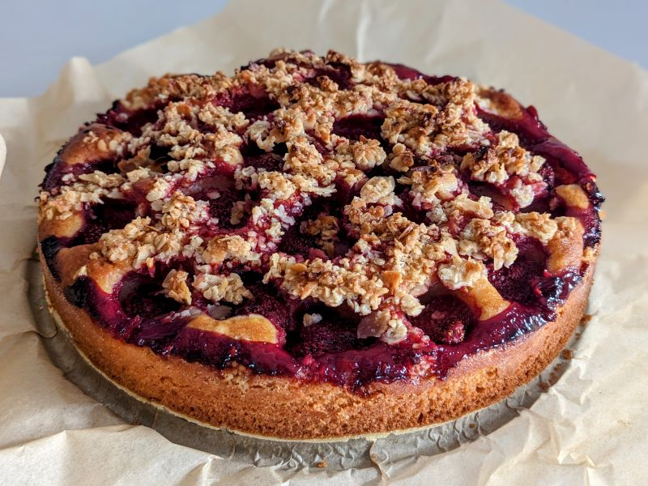

Tento koláč se u nás stal hitem letošní jahodové sezóny a rozhodně si zaslouží své místo mezi mými nejoblíbenějšími recepty. Pekla jsem (jak jinak) podle blogu Milluji:-)
- 400g čerstvých jahod
- 80g krupicového cukru
- 65g řepkového oleje
- 1 vejce
- šťáva z půlky limetky
- 85g zakysané smetany
- 1 lžička vanilkového extraktu
- 180g hladké mouky
- 6g kypřícího prášku
- špetka soli
Nejprve si ve větší míse smícháme všechny mokré suroviny (vejce, olej, zakysanou smetanu, limetkovou šťávu, vanilkový extrakt + cukr). Poté přidáme mouku, kypřící prášek, špetku soli a důkladně zpracujeme těsto. Nyní si připravíme drobenku:
- 35g ovesných vloček
- 35g másla
- 30g krupicového cukru
- hrst mandlových plátků
- špetka soli
Ingredience na drobenku ručně zpracujeme v misce. Těsto vlijeme do máslem vymazané a moukou vysypané koláčové formy, poklademe očištěnými jahodami a nakonec posypeme připravenou drobenkou. Pečeme na 180°C asi 30 minut. Takhle nějak chutná léto :-)
